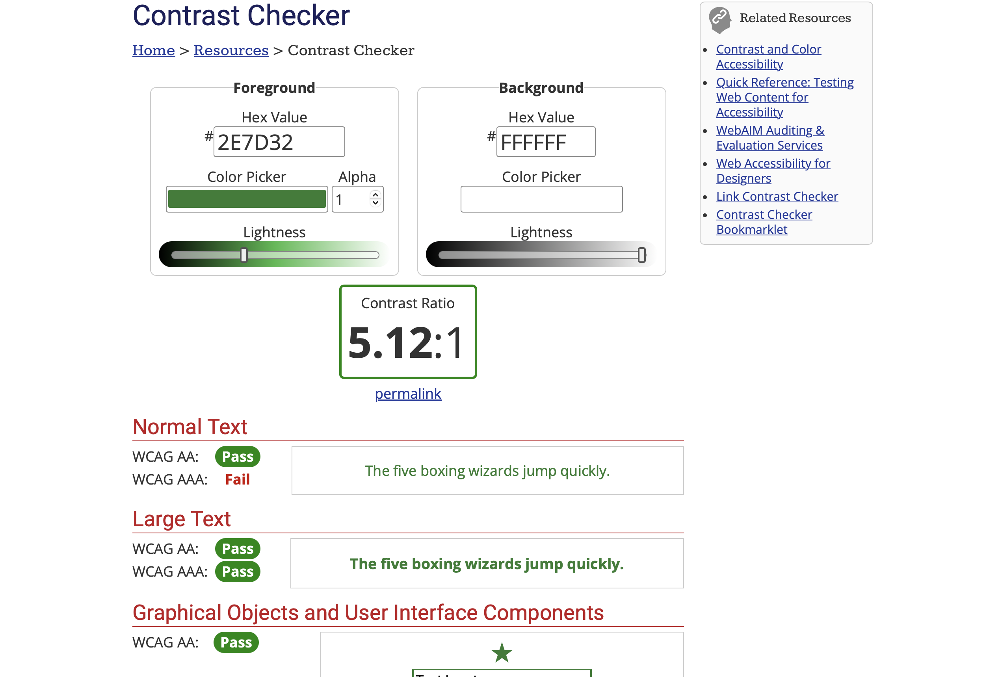
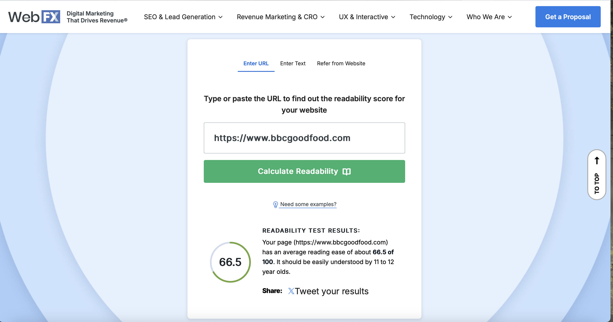

WebAIM Million Accessibility Study Context
According to the WebAIM Million Accessibility Study, nearly 98% of websites fail to meet the WCAG standards. BBC Good Food, being a prominent site, does a better job than most by addressing key accessibility issues, but it still needs improvement in some areas like color contrast, form labeling, and image descriptions.
WAVE Accessibility Evaluation Report for BBC Good Food
The WAVE tool detected several important accessibility aspects:
Errors:
0 Errors: The website passed all major checks for critical issues that could hinder access to content for users with disabilities, such as missing form labels or improper use of semantic HTML elements. This suggests that the core functionality of the site is accessible to assistive technologies.
Color Contrast:
0 Contrast Errors: No issues were found with color contrast between text and background elements. This is a positive finding as it ensures that text is legible for users with low vision or color blindness, meeting the WCAG (Web Content Accessibility Guidelines) contrast requirements.
Alerts:
190 Alerts: These alerts represent potential accessibility issues that are not immediately critical but may still affect the user experience. Alerts could indicate missing alternative text for images, unlabelled interactive elements, or issues with HTML structure. While not urgent, these should be reviewed and addressed to enhance accessibility.
Features:
42 Features: This indicates that the website includes a range of accessibility-related features, such as proper heading structures, accessible forms, and roles for interactive elements. These features are essential for improving navigation and usability for people with disabilities.
Elements:
79 Elements: The site contains 79 interactive elements (e.g., links, buttons, forms) that have been assessed for accessibility. Ensuring these elements are properly coded and accessible is crucial for users who rely on keyboard navigation or screen readers.
ARIA (Accessible Rich Internet Applications):
549 ARIA Attributes: The site uses ARIA attributes extensively, which are designed to enhance accessibility, particularly for dynamic content and complex user interfaces. However, it's important to verify that these attributes are correctly implemented to avoid potential confusion for assistive technologies.
Conclusion:
Overall, the BBC Good Food website performs well in terms of basic accessibility, with no critical errors or contrast issues detected. However, there are a significant number of alerts (190), indicating areas that require attention to further improve usability for all users, particularly those with disabilities.

WebAIM Contrast Checker Findings
Foreground and background color combinations were analyzed for compliance with WCAG standards:
- The BBC Good Food website passed all the WCAG AA standards, so it meets the basic accessibility requirements for most users. However, it didn't meet the WCAG AAA standards, which are more stringent and focus on making websites fully accessible to everyone, including people with more specific needs. This means that while the site is generally accessible, there are areas where it could be improved to make it even more user-friendly for people with things like cognitive disabilities or more personalized accessibility needs.

Screenshot Placeholder for Contrast Checker Results
Readability Test Tool
The BBC Good Food website's text was evaluated for readability. It scored:
- I ran a readability test on the BBC Good Food website, and the result came out to 65.5%. This means that the content is fairly easy to read for most users, but there’s still room for improvement. The score suggests that while the text is understandable for general audiences, some sections might be a bit challenging for people with lower reading levels or for those who prefer simpler language

Reflection on Accessibility in My Own Website Design
As I begin the process of designing my website, one of my main focuses is ensuring that it's accessible to all users, regardless of their abilities. Accessibility is crucial in making sure that people with disabilities—whether visual, auditory, motor, or cognitive—can navigate and interact with the website with ease. To help guide this process, I’ve been exploring accessibility tools like WAVE (Web Accessibility Evaluation Tool) and readability features on websites like BBC Good Food. The BBC Good Food site has been a great reference for understanding how accessibility can be effectively integrated into a user-friendly design. By using WAVE and readability tools, I’ve been able to see how things like text contrast, image alt texts, and proper heading structures contribute to better accessibility. For example, BBC Good Food’s use of high-contrast text and alt text for images made me realize the importance of these elements in ensuring clarity and engagement. These tools have also helped me identify potential issues that could be overlooked, like missing alt text or poor color contrast, which I now know to address in my own design. I plan to include features like alternative text for images, keyboard navigability, high-contrast color schemes for visibility, and captions for videos to ensure that everyone can engage with the content effectively. Additionally, I will focus on providing a clear, intuitive layout with simple navigation, ensuring users don't feel lost or overwhelmed. Reflecting on the accessibility tools and features of websites like BBC Good Food has given me a solid foundation for making my website more inclusive. It’s a process that will involve continuous learning and adjustments as I go, but it's an essential part of creating a user-friendly and welcoming online experience for a wide range of users.